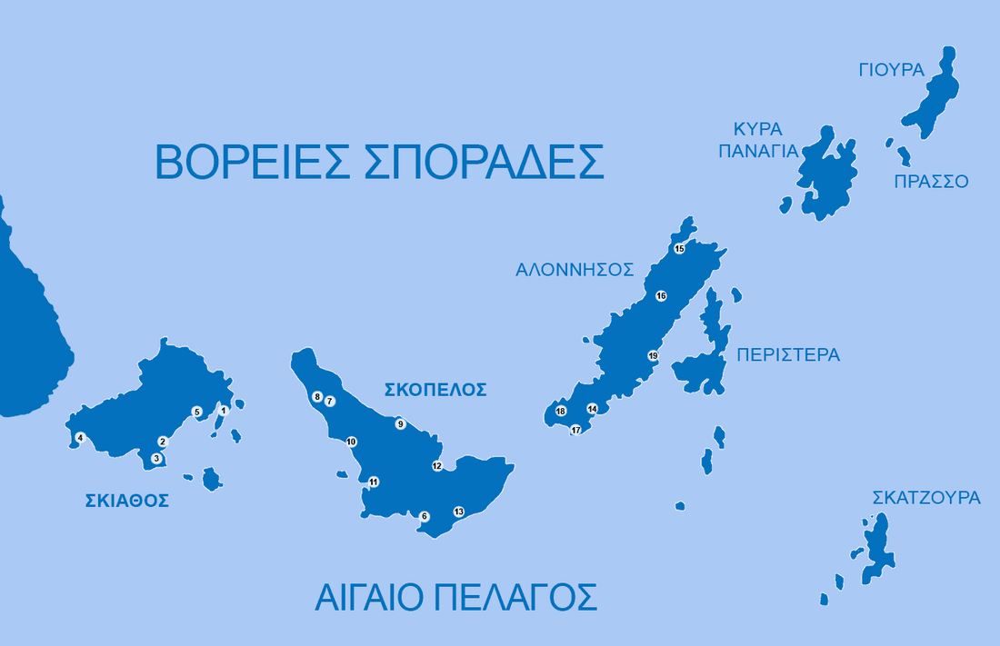

ΣΠΟΡΑΔΕΣ
Αρχική|
Σκιάθος |
Σκόπελος|
Αλόννησος |
Σκύρος|

Λίγα λόγια για τις Σποράδες
- Οι Σποράδες είναι σύμπλεγμα νησιών του Αιγαίου πελάγους τα οποία βρίσκονται στην περιοχή βορείως της Εύβοιας και ανατολικά της Μαγνησίας.
Κατά την αρχαία γεωγραφική αντίληψη ως Σποράδες καλούνταν όλα τα διάσπαρτα νησιά του Αιγαίου εκτός των περί της ιερής νήσου Δήλου Κυκλάδων.
Κατά τις σύγχρονες όμως γεωγραφικές αντιλήψεις ο όρος διαστάλθηκε σε:
- Θρακικές Σποράδες (Ίμβρος, Σαμοθράκη, Θάσος, Λήμνος, Άγιος Ευστράτιος)
- Θεσσαλικές Σποράδες (βόρεια της Εύβοιας και ανατολικά της Μαγνησίας),
- Δυτικές Σποράδες (Ύδρα, Δοκός, Τρίκερι, Σπέτσες, Άγιος Γεώργιος, κ.ά. Σαρωνικού, Αργολικού και Μυρτώου)
- Ανατολικές Σποράδες (όλες οι προσκείμενες των Μικρασιατικών παραλίων, εκτός τα Δωδεκάνησα)
Ιστορία
Αρχικά μετά την ανεξαρτησία ως Βόρειες Σποράδες χαρακτηρίστικαν όλες οι βόρεια των Κυκλάδων νήσοι, του νεοσύστατου τότε Βασιλείου, και Νότιες Σποράδες όλες οι δυτικές των Κυκλάδων νήσοι. Μετά τη προσάρτηση και των υπολοίπων νήσων του Αιγαίου ορίσθηκαν όλοι οι παραπάνω προσδιορισμοί των Σποράδων. Κάποιες ακόμη φορές ως Νότιες Σποράδες θεωρήθηκαν και τα σημερινά Δωδεκάνησα.
Τελικά και μετά τη δεκαετία του 1960 ο όρος περιορίσθηκε μόνο στις σημερινές Σποράδες λαμβάνοντας οι άλλοι νήσοι προσδιοριστικό όρο νήσοι Βορείου Αιγαίου, Ανατολικού Αιγαίου, και νήσοι Αργοσαρωνικού.